Semi-Major Axis
Half the longest diameter of the orbit ellipse — and the single number that sets the orbital period.

101 · zoom in
Take a piece of string, two thumbtacks, and a pencil. Pin the tacks to a board, loop the string around them, pull it taut with the pencil and trace it. You've drawn an ellipse. The semi-major axis is half the longest line you can draw across that shape — the orbit's size.
Here's the magical bit: that one number tells you how long it takes the planet to lap the Sun. Not the shape of the orbit, not its tilt, not where the planet is right now. Just the size. A lopsided cigar-shaped orbit and a perfectly round one with the same semi-major axis take the same time to come around. Kepler figured this out four hundred years ago and we still pay him in textbooks.
When you're sizing a mission, this is the first lever you pull. Want to reach Mars? Your transfer ellipse needs a semi-major axis somewhere between Earth's and Mars's. Pick the size, the time-of-flight follows automatically.
If you flatten a Keplerian ellipse into its longest dimension, the line you've drawn is the major axis. Cut that in half and you have the semi-major axis — written `a`. It's the average distance from the orbiting body to the focus, kind of: an arithmetic mean of perihelion (closest) and aphelion (farthest).
Why care? Because of Kepler's third law: `T² ∝ a³`. The orbital period depends only on the semi-major axis. Shape doesn't matter. Inclination doesn't matter. Stretch one orbit so it's a cigar and another so it's a circle — if both have the same `a`, both take exactly the same time to come back round.
In Orrery's `/explore` panels you'll see this number in astronomical units. Earth: a ≈ 1.0 AU. Mars: 1.52 AU. Jupiter: 5.2 AU. Plug into the period formula and you've reproduced the orrery clock: 1 year, 687 days, 11.86 years.
SEE IN THE APP
- /explore Each planet panel shows its semi-major axis in AU